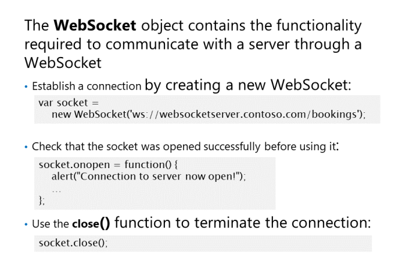
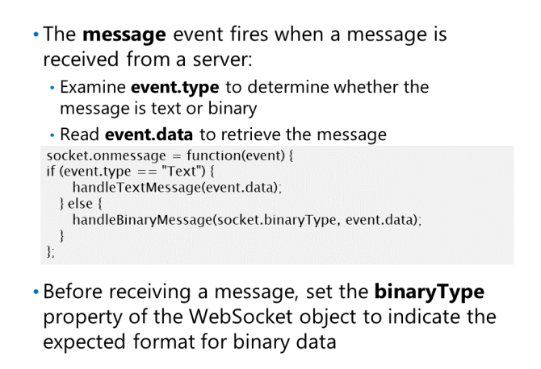

Łączenie z serwerem za pomocą WebSocket
Istnieją dwa ustalone sposoby wdrażania w czasie rzeczywistym
komunikacja:
• Continuous polling. Strona łączy się z serwerem i wysyła do serwera żądanie AJAX
nowe dane. Serwer natychmiast odpowiada, wskazując, że dane nie uległy zmianie od ostatniego
żądać lub odsyła nowe dane. Następnie strona zamyka połączenie. Ten proces się powtarza
co kilka sekund.
• Long polling. Strona łączy się z serwerem, ustawiając wartość limitu czasu połączenia na bardzo długi
okres czasu (do kilku godzin, w zależności od aplikacji), a następnie wysyła zapytanie do
serwer dla nowych danych. Serwer odpowiada tylko wtedy, gdy ma nowe dane do wysłania.
WebSockets zapewniają prostą, lekką metodę
do włączania pełnego dupleksu w czasie rzeczywistym
komunikacja między klientem a serwerem
bez polegania na HTTP.

WebSocket zapewnia metody, które obiekt klienta
służy do łączenia się z serwerem oraz wysyłania i
odbierania wiadomości. Obiekt WebSocket również
zawiera szereg właściwości, które zachowują
informacje o stanie
połączenia.
Sprawdzenie czy przeglądarka obsługuje WebSocket:
Otwieranie połączenia
Rozpoczęcie wszelkiej komunikacji z serwerem WebSocket jest otwierającym uzgadnianiem protokołu HTTP między
kod klienta działający na stronie internetowej i serwerze. Konstruktor WebSocket umożliwia utworzenie pliku
nowe połączenie i określić adres URL serwera, z którym chcesz się połączyć. Ten adres URL używa schematu ws lub wss do
wskaż, że jest to adres WebSocket:
const socket = new WebSocket('ws://websocketserver.contoso.com/bookings');
Domyślnym portem dla protokołu ws: // jest port 80 (podobnie jak http). Jeśli serwer oczekuje na połączenie
żądań na innym porcie, wystarczy podać port jako część adresu URL. Na przykład:
const socket = new WebSocket("ws://localhost:55981/bookings");
eśli potrzebujesz nawiązać szyfrowane połączenie, możesz użyć bezpiecznego protokołu WebSockets wss: //.
Ten protokół domyślnie używa portu 443.:
const socket = new WebSocket('wss://secure.websocketserver.contoso.com/bookings');
Początkowy połączenia przez HTTP jest wykonywane automatycznie, a jeśli serwer zaakceptuje żądanie od
klienta zostanie ustanowione nowe połączenie za pomocą protokołu transportowego WebSocket.
nterfejs API WebSocket jest asynchroniczny. Jest tak, ponieważ nawiązanie połączenia może zająć trochę czasu, a po nim
połączenie zostało otwarte, wiadomości mogą być odbierane w dowolnym momencie przez to połączenie. Po tym jak masz
utworzył obiekt WebSocket, nie powinieneś próbować go używać, dopóki nie będzie gotowy. Możesz określić
stan obiektu WebSocket poprzez sprawdzenie właściwości readyState. Ta właściwość może mieć
następujące wartości:
• CONNECTING (0), co oznacza, że został utworzony obiekt WebSocket, ale połączenie
wciąż powstaje między stroną a serwerem.
• OPEN (1), który wskazuje, że ustanowiono połączenie między stroną a serwerem.
• CLOSING (2), co oznacza, że trwa uzgadnianie zamknięcia.
• CLOSED (3), co oznacza, że połączenie między stroną a serwerem zostało zamknięte lub mogło zostać
nie można ustalić.
Lepszym sposobem na wykrycie, kiedy połączenie zostało pomyślnie otwarte, jest obsługa zdarzenia otwarcia
obiekt WebSocket. W tym momencie możesz zacząć wysyłać i odbierać wiadomości za pośrednictwem połączenia
Zamykanie połączenia
Aby zamknąć połączenie z serwerem, wywołaj funkcję close() obiektu WebSocket. Ta funkcja
pobiera dwa opcjonalne parametry, code and reason , które umożliwiają wysłanie do serwera kodu statusu wyjścia
(opisany w RFC6455) i tekstowy powód zamknięcia połączenia.
socket.close();
socket.close(1000, "No Error. All communication finished with.");
Zdarzenie close uruchamia się, gdy połączenie zostanie zamknięte. Obiekt zdarzenia ma trzy właściwości:
• wasClean, która jest wartością logiczną wskazującą, czy połączenie zostało poprawnie zamknięte (prawda) czy
wystąpił problem (fałsz).
• code, który jest kodem stanu wyjścia (określonym w RFC6455) wskazującym, dlaczego połączenie zostało zamknięte
• reason, który jest ciągiem tekstowym podającym powód, dla którego połączenie zostało zamknięte.
Poniższy kod pokazuje przykład, który wykrywa, czy połączenie zostało pomyślnie zamknięte, czy nie
Wysyłanie wiadomości przez WebSocket

Po ustanowieniu połączenia z
serwer przez WebSocket, możesz wysłać
wiadomość do serwera za pomocą send()
jeśli podczas wysyłania wystąpi błąd, wystąpi zdarzenie błędu.
Dane wiadomości można wysłać jako jeden z czterech typów obiektów:
• Dowolny typ danych tekstowych UTF8; zwykły tekst, JSON, kodowany w standardzie base64 i tak dalej. W poniższym przykładzie użyto
funkcja JSON.stringify() do serializacji obiektu jako tekstu i wysłania go:
• Blobs, takie jak files or images. Poniższy przykład wysyła plik określony przez pole w formularzu HTML5
• Obiekt ArrayBuffer. Ten obiekt reprezentuje bufor używany do przechowywania surowych danych binarnych. Dane mogą
dostęp do nich można uzyskać tylko przy użyciu widoku tablic maszynowych, takich jak Uint8Array i Int32Array. Następujące
przykład wysyła tablicę liczb całkowitych:
• Obiekt ArrayBufferView. Ten obiekt reprezentuje typ tablicowy, do którego można uzyskać dostęp
dane binarne w ArrayBuffer. Poniższy przykład wysyła dane z obrazu wyświetlanego przez
za pomocą elementu canvas:
Po wysłaniu wiadomości możesz sprawdzić, czy przesłano ją pomyślnie, sprawdzając, czy
Właściwość bufferedAmount obiektu WebSocket wynosi zero.
Odbieranie wiadomości z WebSocketu
Protokół WebSocket jest dwukierunkowy, a protokół
serwer, z którym jesteś połączony, może wysłać Ci
wiadomość w dowolnym momencie. Zdarzenie wiadomości zostanie uruchomione
po otrzymaniu wiadomości z serwera,
dając ci możliwość otrzymywania i przetwarzania
wiadomość. Obiekt zdarzenia przekazany do
moduł obsługi zdarzeń wiadomości ma dwie właściwości:
• type, który wskazuje, czy typ
otrzymana wiadomość to dane tekstowe lub binarne.
• data, które zawierają dane wiadomości.
gotowy kod dla JSON: